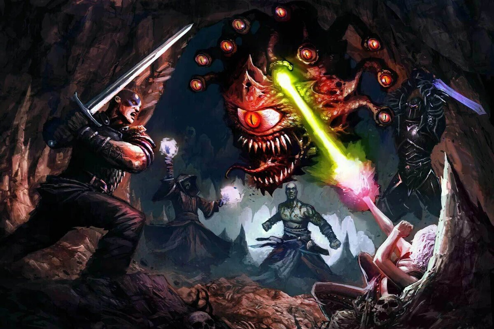
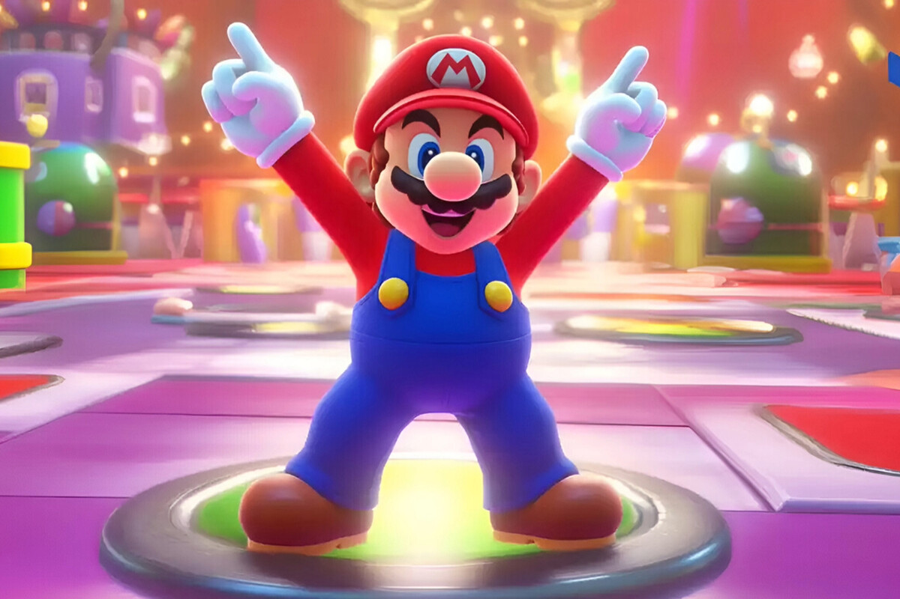
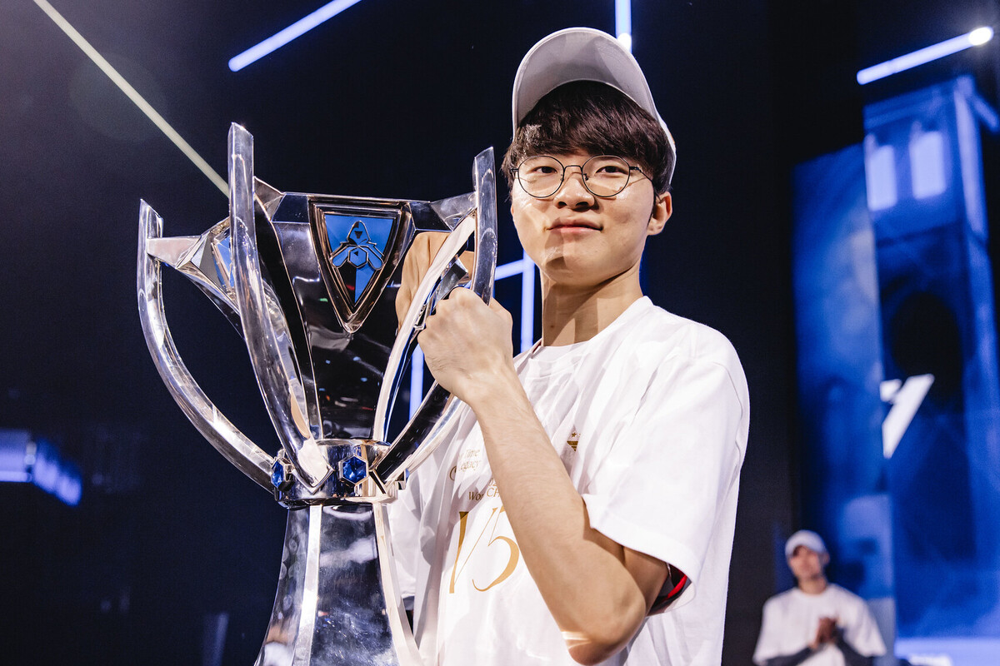
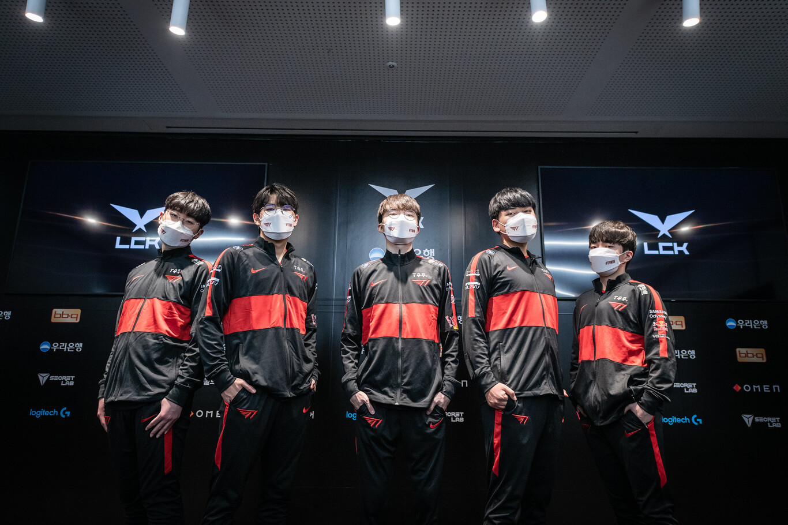

¡Más rebajas en PC! Seleccionamos 13 juegos en oferta, con descuentos de hasta el 90% en títulos de Epic Games Store
Publicado el 04 de noviembre de 2024

Acabamos de dejar atrás las rebajas con motivo de Halloween, pero siempre hay alguna excusa para iniciar una nueva campaña
de descuentos. Epic Games, por ejemplo, ha puesto punto y final a las 'Ofertas de Halloween' y ahora vuelve a la carga con
una promoción que se mantendrá activa durante gran parte de noviembre. Lo que, en otras palabras, supone una oportunidad para
ampliar nuestra biblioteca digital de PC.
Aunque no es una campaña extremadamente grande, los denominados 'Epic Savings' de Epic Games reducen el precio de un puñado
de títulos disponibles en su catálogo. Cabe destacar, eso sí, que la nueva promoción de los padres de Fortnite no estará disponible
durante mucho tiempo; los jugadores tienen hasta el próximo 18 de noviembre para sacar la cartera y hacerse con títulos de PC.
Aún así, hablamos de dos semanas completas para echar un vistazo a las ofertas de Epic Games Store.
Como ya es habitual, hemos preparado una selección con algunas de las mejores opciones de Epic Games en lo que respecta a calidad-precio.
- Baldur's Gate II: Enhanced Edition por 5,59 euros (antes por 15,99 euros).
- BioShock Infinite: The Complete Edition por 10,99 euros (antes por 54,97 euros).
- Enter the Gungeon por 4,43 euros (antes por 14,79 euros).
- Red Dead Redemption 2 – Ultimate Edition por 31,49 euros (antes por 89,99 euros).
- Marvel's Midnight Suns por 8,99 euros (antes por 59,99 euros).
- Mafia: Edición Definitiva por 7,99 euros (antes por 39,99 euros).
- Sid Meier's Civilization VI – Anthology Edition por 16,99 euros (antes por 99,99 euros).
Super Mario Party Jamboree está de oferta
solo hoy, y es un acierto seguro para
regalar en Navidad
Publicado el 04 de noviembre de 2024

Una de las mejores videoconsolas de la actualidad con la que disfrutar de un amplio catálogo de títulos para todos los
públicos, con los que jugar en compañía de familiares y amigos, es sin lugar a dudas Nintendo Switch.
Los títulos de la empresa nipona destacan por contar con un divertido apartado gráfico y por presentar mecánicas más sencillas.
Uno de los lanzamientos más recientes que ha recibido esta exitosa videoconsola híbrida, ha sido Super Mario Party Jamboree,
la nueva entrega de esta tirada de juegos cargado de contenido para disfrutar en compañía. Una idea de regalo perfecta para estas
navidades que ahora podemos encontrar en oferta: lo tenemos disponible por 45,45 euros.
Con motivo de un nuevo Día sin IVA en MediaMarkt, nos podremos llevar este videojuego rebajado a su precio más bajo hasta
la fecha. A pesar de contar con apenas unas semanas en el mercado, es una oportunidad ideal para regalar de cara a las
próximas fiestas. Eso sí: tan solo estará rebajado durante unas horas, concretamente hasta las 09h del día de mañana,
5 de noviembre.
El mayor talento que se ha sentado delante de un teclado. Faker se corona campeón por quinta vez en los Worlds 2024
Publicado el 04 de noviembre de 2024

Quizás no había dudas sobre su dimensión pero, por si acaso, Lee "Faker" Sang-Hyeok se acaba de convertir en pentacampeón
mundial de League of Legends. Lleva doce temporadas compitiendo a nivel profesional, y ha conseguido llegar a nueve
semifinales, siete finales, y levantar la Copa del Invocador cinco veces. ¿La más reciente? La de hace unos dias en el
O2 Arena de Londres.
Podíamos haber calificado esta final de los Worlds 2024 como la final de las narrativas. Por un lado llegaba BLG,
un conjunto chino que a ojos de todos los expertos arrancó el 2024 con una plantilla inferior en calidad a la de la
pasada temporada, pero con muchas ganas de romper dos barreras: nunca T1 había perdido una serie contra un equipo chino
en Worlds, y nunca un midlaner originario de ese país se había alzado campeón. Y basta otro ejemplo para definir su
hambre de títulos su plantilla cuentan con Bin, el único jugador de la historia que logró una pentakill en una final
mundial, para luego perderla.
Por otro estaba T1, el equipo con más títulos mundiales de la historia. Tras un año muy mejorable a nivel doméstico,
especialmente en verano, cuando casi se quedan fuera de Worlds y se salvaron sobre la bocina para reclamar el cuarto y
último puesto que concede la liga surcoreana al Campeonato Mundial, T1 llegaba al O2 Arena de Londres con la posibilidad
de ser el único equipo en lograr dos Worlds consecutivos con el mismo quinteto titular. Y una miríada más de récords, claro.
Faker ha trascendido al League of Legends
Pero todo esto queda eclipsado por una figura, la de Faker. El Rey Demonio Inmortal, como le apodan, es alguien que ha trascendido a uno de los videojuegos longevos y más jugados de siempre; dejad reposar esa frase. Cuando este muchacho surcoreano ganó su primer título, sus compañeros actuales en T1 tenían 9, 10, 11 y 11 años, respectivamente, y a Jinx, la campeona protagonista de Arcane, le faltaba una semana para aparecer en League of Legends.
Desde 2013 ha sido una constante en los podios y finales, con unos escasos borrones en su carrera. Es natural que los deportistas reciban críticas cuando la edad de la supuesta retirada se acerca, pero es que Faker ha recogido su segundo MVP de unas finales de Worlds ocho años después del primero. El frío dato es lo que da la dimensión de su gesta, porque no hay nadie con quien compararle.
Volver arriba